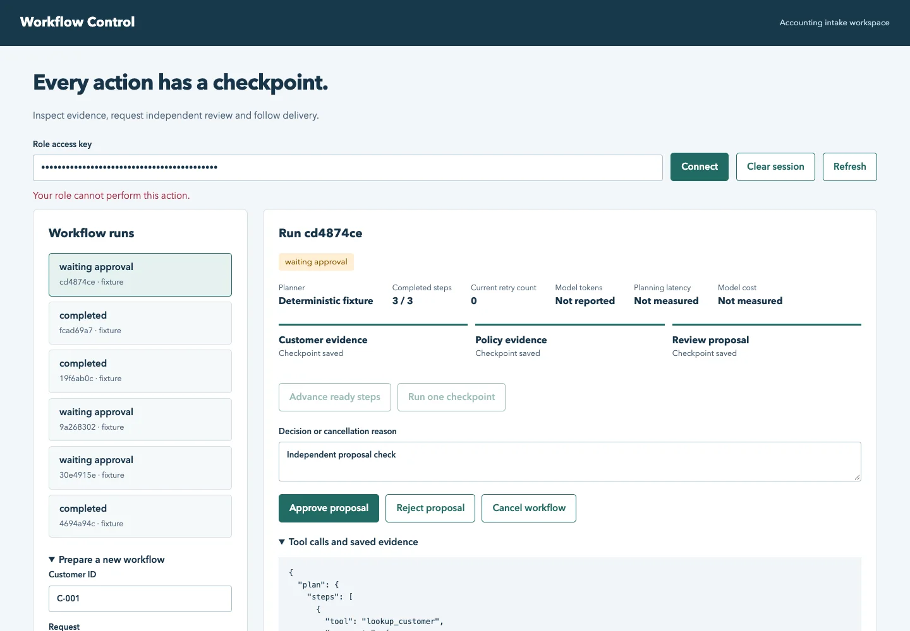
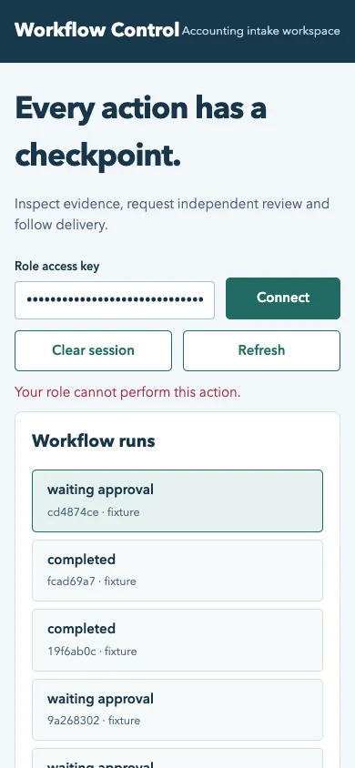

The model may plan. Code and people decide what happens.
An untrusted request ("prepare a review of this invoice") becomes a reviewable proposal. One bounded model call plans up to three tool calls; the server checks every tool name, argument and customer scope, runs plain functions with checkpoints, and stops. Only after a different person approves does an outbox write the case, exactly once.

Why it exists
"Agentic" too often means the model holds the keys.
A model is given tools that write to the CRM and allowed to loop until it is done. A prompt injection, a wrong customer ID or a retry after a crash can create the wrong case, or the same case twice, before anyone looks.
Tools are three explicit functions with strict schemas and customer-scope checks, within a three-step budget. Progress is checkpointed with leases and fencing, the proposal is immutable, the requester cannot approve their own run, and delivery goes through an idempotent outbox.
Try it · runs in your browser
Replay a genuine local-model run
Recorded in evidence/local-model-run.json: qwen3:8b running on a laptop through Ollama plans the tool calls, then a scripted, independent reviewer approves. Click through the eight events.
Synthetic customer records and a local mock CRM. One run shows the path works; it is not a measure of model accuracy. The fixture planner, used by default and in tests, makes no model call.
How it works
Durable by design
Bounded planning
One model call returns a plan of at most three steps; unknown tools, wrong argument shapes or out-of-scope customers are rejected before execution.
Checkpoints and leases
Every step is saved in SQLite with atomic leases and fencing, so a crashed or stale worker cannot overwrite newer progress.
Approval and outbox
The run waits with an immutable proposal; a different identity approves; an outbox delivers idempotently to the mock CRM.
Retries that end
Persisted exponential backoff, bounded retries and terminal failure states, with structured audit events.
The flow, step by step
Screens
What it looks like

Evidence
What is real, and what is not
REAL Built and verified
- FastAPI workflow engine with checkpoints, leases, retries, approval and outbox, with tests and CI
- A genuine local tool-calling run with qwen3:8b through Ollama
- OpenAPI contract and a browser workflow inspector
SIMULATED Mocked or not built yet
- Specialist steps are functions, not autonomous agents
- Mock CRM, synthetic customers and a scripted reviewer
- Not deployed and not validated against a live Azure resource
Run it yourself
Run it locally
git clone https://github.com/phlppgdfry/agentic-workflow-platform
cd agentic-workflow-platform
python3 -m venv .venv && . .venv/bin/activate
python -m pip install -e '.[dev]'
python -m workflow_platform.cli # waiting_approval, then completed
python -m pytest -q